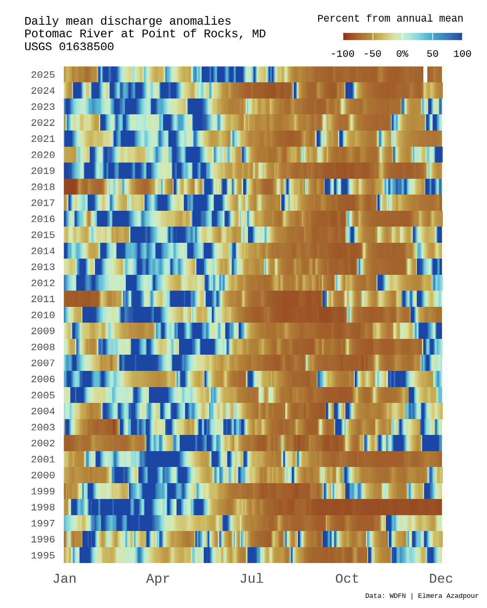

library(tidyverse) # for wrangling data frames
library(dataRetrieval) # for loading streamflow data
library(sf) # for wrangling spatial features
library(mapview) # for interactive map view
library(showtext) # for custom font loading
library(sysfonts) # for custom font loading
library(scales) # for custom breaks/labels on legend
library(scico) # for color palette
library(cowplot) # for composing final plot About
An anomaly can be defined as something that deviates from what is standard, normal, or expected. Here, I will demo how to plot daily mean streamflow anomolies (from the annual mean) over time at the Potomac River at Point of Rocks, MD (USGS-01638500).
Load packages
Set global variables
Here we will set some variables that can be easily adjusted downstream, for ease. User’s can load custom fonts from Google Fonts (for example, “Cousine” can be found here). You may also want to select a different USGS streamgage to plot streamflow data. In this case, I selected USGS-01638500 due to it’s long streamflow/discharge record.
# Load custom font
font_text <- "Cousine"
sysfonts::font_add_google(font_text)
showtext_opts(dpi = 300, regular.wt = 200, bold.wt = 700)
showtext::showtext_auto()
usgs_site_no <- "USGS-01638500"
# https://help.waterdata.usgs.gov/code/parameter_cd_query?fmt=rdb&inline=true&group_cd=%
parameter_id <- "00060" # discharge, cubic feet per second
# https://help.waterdata.usgs.gov/code/stat_cd_nm_query?stat_nm_cd=%25&fmt=html
stat_id <- "00003" # mean values
start_date <- "1995-01-01"
end_date <- "2025-12-31"
bg_color <- "white"
scico_palette <- "roma"
leg_text <- "Percent from annual mean"
title_text <- "Daily mean discharge anomalies\nPotomac River at Point of Rocks, MD\nUSGS 01638500"
tag_text <- "Data: WDFN | Elmera Azadpour"Load daily discharge data
We will use the new dataRetrieval::read_waterdata_daily() function with more information about the function here.
dv <- read_waterdata_daily(
monitoring_location_id = usgs_site_no,
parameter_code = parameter_id,
statistic_id = stat_id,
time = c(start_date, end_date),
skipGeometry = FALSE
)
head(dv, n = 5)Simple feature collection with 5 features and 11 fields
Geometry type: POINT
Dimension: XY
Bounding box: xmin: -77.54311 ymin: 39.27358 xmax: -77.54311 ymax: 39.27358
Geodetic CRS: WGS 84
# A tibble: 5 × 12
daily_id time_series_id monitoring_location_id parameter_code statistic_id
<chr> <chr> <chr> <chr> <chr>
1 66d15e47-9c… 6fce477b41084… USGS-01638500 00060 00003
2 4cdd0b93-5b… 6fce477b41084… USGS-01638500 00060 00003
3 77a5160d-ca… 6fce477b41084… USGS-01638500 00060 00003
4 a516866d-5f… 6fce477b41084… USGS-01638500 00060 00003
5 befbfc9d-65… 6fce477b41084… USGS-01638500 00060 00003
# ℹ 7 more variables: time <date>, value <dbl>, unit_of_measure <chr>,
# approval_status <chr>, last_modified <dttm>, qualifier <chr>,
# geometry <POINT [°]>View gage
Using mapview, you can take a gander at the location of the streamgage on the Potomac River, Maryland.
mapview(slice_head(dv, n = 1))Prepare daily anomalies within each year
To quantify changes from typical conditions, daily discharge values are converted to percent anomalies relative to each year’s mean. This normalizes variability across wet and dry years while preserving seasonal patterns.
dv_proc <- dv |>
st_drop_geometry() |>
mutate(
date = as.Date(time),
year = year(date),
value = as.numeric(value)
) |>
group_by(year) |>
mutate(
annual_mean = mean(value, na.rm = TRUE),
pct_from_annual_mean = 100 * (value - annual_mean) / annual_mean
) |>
ungroup()Create stripe plot
Below we’ll make a stripe plot where each row represents a year and each column a day of the year, with color indicating the magnitude and direction of the discharge anomaly. This stripe style layout highlights seasonality, extremes, and longterm shifts in streamflow at a glance.
base_plot <- ggplot(
dv_proc,
aes(x = yday(date),
y = factor(year),
fill = pct_from_annual_mean)
) +
geom_tile(height = 1) +
# Provide custom legend breaks/lables
scale_x_continuous(
breaks = c(1, 91, 182, 274, 365),
labels = c("Jan", "Apr", "Jul", "Oct", "Dec"),
expand = c(0, 0)
) +
scale_fill_scico(
palette = scico_palette,
direction = 1,
limits = c(-100, 100),
breaks = c(-100, -50, 0, 50, 100),
# Add % label on 0% anomaly legend element
labels = function(x) ifelse(x == 0, "0%", as.character(x)),
oob = squish,
# Supply our legend title
name = leg_text,
alpha = 0.9,
guide = guide_colorbar(
# Set a horizontal legend to adjust downstream
direction = "horizontal",
ticks = TRUE,
barwidth = unit(2.5, "cm"),
barheight = unit(0.15, "cm"),
label.position = "bottom",
title.position = "top",
title.hjust = 1)
) +
# Drop title and axis text, we will add custom one downstream
labs(
title = NULL,
x = NULL,
y = NULL
) +
# Customize theme elements
theme_minimal(base_size = 12) +
theme(panel.grid = element_blank(),
axis.text.x = element_text(size = 8),
axis.text.y = element_text(size = 6),
text = element_text(family = font_text),
legend.text = element_text(size = 6),
legend.title = element_text(size = 6)
)
# Checkout viz
base_plot
Function to grab legend grob
Since the final figure is assembled with cowplot, the legend will need to be extracted from the ggplot object. This helper function safely returns the first nonempty legend grob for manual placement downstream.
#' Get legend (and avoid returning zeroGrob objects)
#'
#' @param plot a ggplot
#'
#' @return a grob with "guide-box" component name (i.e., a legend)
#'
get_legend_non0 <- function(plot) {
legends <- cowplot::get_plot_component(plot, "guide-box", return_all = TRUE)
non0_idx <- which(!purrr::map_lgl(legends, ~ inherits(., what = "zeroGrob")))
if (length(non0_idx) == 0) {
cli::cli_warn(c("!" = "No non-zeroGrob legends. Returning `NULL`."))
return(NULL)
}
if (length(non0_idx) > 1) {
cli::cli_warn(c("!" = "Multiple legends exist. Returning the first one."))
}
legends[non0_idx][[1]]
}Compose final plot
We can now combine the elements on a custom canvas using cowplot, allowing nice control over layout, text, and legend placement. The final plot is then exported using ggsave().
# Pull legend
legend_anomoly <- get_legend_non0(base_plot)
# Set background canvas
canvas <- grid::rectGrob(
x = 0, y = 0,
width = 16, height = 9,
gp = grid::gpar(
fill = bg_color, alpha = 1,
col = bg_color
)
)
# Cowplot elements together
p <- ggdraw(xlim = c(0, 1), ylim = c(0, 1)) +
draw_grob(canvas,
x = 0, y = 1,
height = 1, width = 1,
hjust = 0, vjust = 1
) +
# Place base figure we made above, but drop legend
draw_plot(base_plot + theme(legend.position = "none"),
x = 0.05,
y = 0.02,
width = 0.88,
height = 0.89
) +
# Add our legend grob in our favored placement
draw_plot(legend_anomoly,
x = 0.8,
y = 0.9,
height = 0.08,
width = 0.05
) +
# Add title text
draw_label(title_text,
x = 0.05, y = 0.945,
fontfamily = font_text,
size = 7,
hjust = 0
) +
# Add citation and author text
draw_label(tag_text,
x = 0.75, y = 0.02,
fontfamily = font_text,
size = 4,
hjust = 0
)
# To save
ggsave(
filename = "streamflow-anomaly-fig.png",
plot = p,
width = 4, height = 5,
dpi = 300, bg = "#FAF9F6"
)